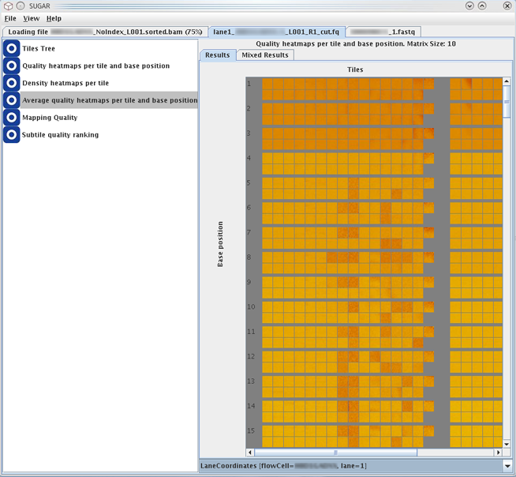
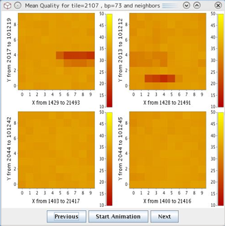
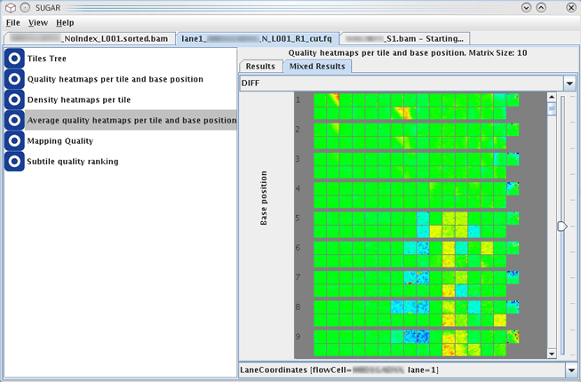

This module generates heatmaps to show an overall view of average quality values across all tiles and base positions of the data loaded to the SUGAR.

Mouse clicking on each tile on the heatmap opens popup view of the selected tile and its neighboring tiles (see below). This window allows more detailed evaluation of the selected tile and closer regions. The legend of the coloring is shown beside this detaied heatmaps.
Coloring of the heatmap displays the average quality of the tiles. Their respective range in X-Y coodinates is indicated this window.

The quality heatmap is colored by a linear paint scale with the following color boundaries in the Java implementation:
The buttons Previous/Next allow to jump to the heatmap for the previous/next base position.
The button Start Animation displays each heatmap of the selected nucleotide position for 1 second and then jumps to the next nucleotide position.
In this screen, the heatmaps of the top and bottom lanes/tiles are combined using the selected mix operation. This view may help to find air bubbles or the other technical problems during the sequencers run.

The mix operation can be selected from the combo-box at the top of this tab. Three different indicators can be selected for the scheme of heatmap colorings::
The parameter 'weight' means the mixing balance between the values from the top and bottom lanes (ranging from 0 to 1) and can be specified and changed by using the slider on the right side of the screen. This parameter is used only by the weighted average mix operation.
The results of difference and absolute difference mix operations are colored using a 'temperature' paint scale of the Java implementation with the following color boundaries:
See the section "Quality Heatmaps."